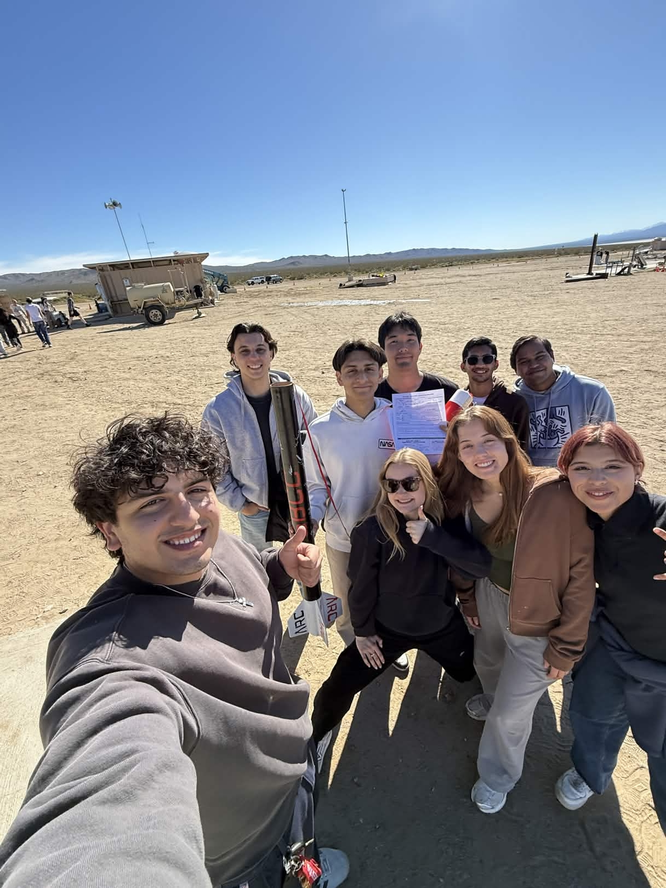
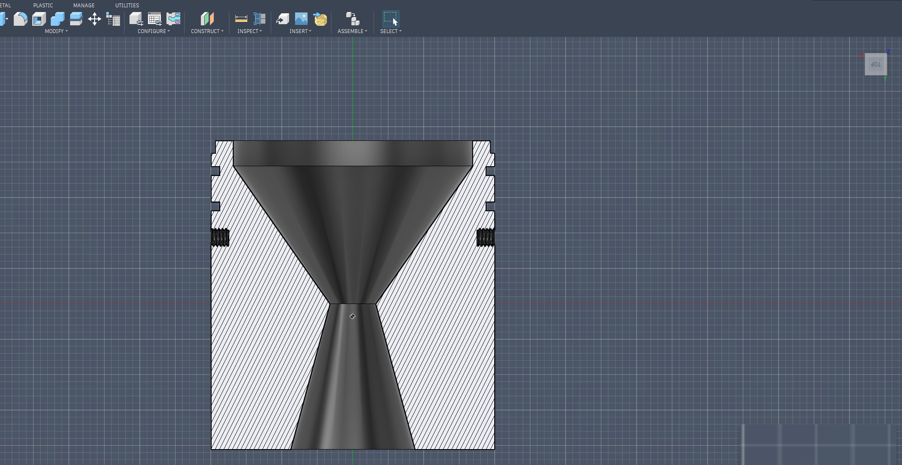

THRUST Propulsion Sub-Team Current · Cal Poly Pomona
Feed-system, injector, and test-stand hardware design for student liquid-rocket propulsion at Cal Poly Pomona.
Organization
THRUST, Cal Poly Pomona
Role
Propulsion Sub-Team Member
Focus
CAD Packaging, Plumbing & Test Hardware
Status
Active (Junior Year)
As a junior in Aerospace Engineering at Cal Poly Pomona, I design manufacturable CAD assemblies, mounting brackets, and pressurized test-stand interfaces for the THRUST liquid-propulsion sub-team—prioritizing fastener accessibility, O-ring gland tolerances, and clean routing for pressure transducers and solenoid valves during stand leak checks.
SolidWorks
Fluid Systems & Fittings
DFMA
Test-Stand Integration
SBCC Aerospace & Rocket Club — Airframe, Shop Work & Flight
Working as one of the primary hands-on builders for the Santa Barbara City College Aerospace & Rocket Club, I assembled airframe sections, mixed and applied structural fin-can epoxy fillets, rigged recovery harnesses, and completed launch-rail range prep for our L1 and L2 qualification flights. In the Mojave desert, the rocket achieved a clean rail boost, nominal apogee separation, and full parachute inflation for a damage-free recovery.
Mojave desert launch sequence: rail ignition, boost, apogee separation, and drogue/main deployment.Post-flight recovery in the Mojave desert with intact airframe, shock cord, and deployed parachute.

SBCC Aerospace & Rocket Club range crew after successful qualification flight and recovery.
Finished ARC fin can, aerodynamic fillets, and aft motor retention hardware.Structural epoxy mixing and fin-can bonding during airframe assembly.Drilling retention hardware holes and prepping the aft airframe in the lab.
Shop Machining & Custom Rocket Nozzle Prints
Alongside a fellow student machinist, I operated the manual lathe in the campus machine shop to turn aluminum and phenolic stock. To prepare for our custom post-certification rocket, the team completed CAD cross-sections and dimensioned engineering prints for 6061-T6 aluminum and phenolic linen converging-diverging nozzles before club funding concluded prior to physical fabrication.
Inspecting cylindrical aluminum stock and setup at the manual lathe chuck in the machine shop.

Converging-diverging nozzle CAD cross-section with O-ring seal glands and threaded radial ports.
Dual-Stage Piston Recovery & GPS-Guided Parafoil Study Concept & CAD
Team architecture trade study and Onshape mechanical assembly for active apogee piston ejection and steerable parafoil descent.
Status
CAD & Trade Study Complete (Unfunded)
CAD Platform
Onshape Assembly
Architecture
CO₂/Pyro Piston + Steerable Parafoil
Recovery Architecture & Rigging Design
To protect onboard electronics and reduce desert recovery walk distances, our team designed a two-stage recovery sequence: a pressurized piston ejection system at apogee for high-speed drogue stabilization, followed by main parafoil deployment at 500–1,000 ft. Whiteboard schematics mapped load paths across the bulkhead (“godnut”), quick links, shock cord, deployment bag retention (“hairtie” staging), and drogue riser to prevent line fouling.
GPS-Guided Parafoil Concept & Onshape Model
Evaluating COTS 1-axis and 2-axis servo parafoil guidance controllers with swivel-mounted steering lines, we modeled a complete recovery bay in Onshape integrating the bulkhead, puncture needle/CO₂ canister actuator, and shock-cord eyebolts to establish packaging constraints for future club builds.
Onshape assembly (“Final Recovery System”) integrating the CO₂ actuator, puncture needle, and eyebolt bulkheads.Internal piston ejection and shock-cord load-path schematic.Harness rigging sequence mapping quick links, deployment bag staging, and drogue riser.
Onshape CAD
Recovery Systems
Trade Studies
Harness Rigging
Systems Engineering
IR Thermal Diagnostic Payload & Static-Fire Protocol Research Protocol
16-page experimental research document and operating procedure for infrared hotspot detection during static-fire and flight testing.
Status
Research & SOP Authored (Unfunded)
Target Sensor
TOPDON TC004 IR Camera (256×192, 25 Hz)
Telemetry Stack
Raspberry Pi + Barometer + Triaxial Accel
Research Objective & Instrumentation Architecture
Authored a 16-page experimental payload proposal and standard operating procedure (SOP) to detect casing insulation breakdown, uneven propellant burn, or gas leaks prior to burn-through—pairing a Raspberry Pi flight computer, barometric altimeter, triaxial accelerometer, and RF transceiver with a TOPDON TC004 thermal camera.
To eliminate ambient IR reflections off bare aluminum casings, the SOP specifies high-temperature matte black reference patches (ε ≈ 0.95 vs. ε = 0.60–0.80 for bare metal), dual-band thermal switching (−20 to 100°C pre-launch; up to 350°C at T−30 s), and abort/inspection triggers for localized spikes >50°C within 2 seconds or persistent post-burn heat soak >30–40°C outside the nozzle zone.
Infrared Thermography
Test Protocol & SOP
Emissivity Calibration
Raspberry Pi Telemetry
Static-Fire Diagnostics
NASA Jet Propulsion Laboratory — Facility Visit
Behind-the-scenes tour of mission control and flight hardware displays in Pasadena, CA.
Center of the Universe marker outside NASA Jet Propulsion Laboratory.Full-scale Voyager spacecraft engineering model at JPL.